Quantifying Underestimates of Long-term Upper-Ocean Warming
This page has been created in support of "Quantifying Underestimates of Long-term
Upper-Ocean Warming" by Paul J. Durack, Peter J. Gleckler, Felix W. Landerer
and Karl E. Taylor - published in Nature Climate Change 5th October 2014. DOI: 10.1038/nclimate2389
ALL MATERIAL IS EMBARGOED WITH NATURE CLIMATE CHANGE AND IS NOT FOR RELEASE UNTIL 1PM U.S.
EASTERN TIME, SUNDAY 5th OCTOBER 2014.
Pre-press copies of the accepted paper and supporting online material are being provided for media
use.
To support this publication a media release and some additional FAQs
are being provided for media use.
The following images are available in support of the Durack et al. (2014) publication. Please
use the source acknowledgements as noted for each figure caption.
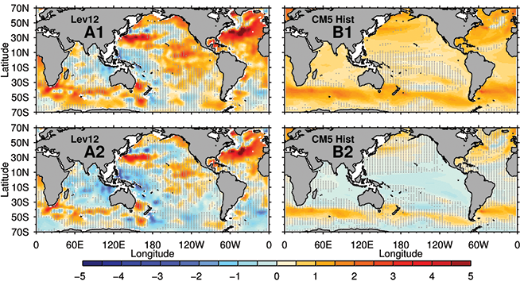
Figure 1. Upper-ocean heat content changes for 1970 to 2004. In upper panels
red indicates regions becoming warmer, and blue regions becoming cooler, and
in lower panels the regional response when the global mean is removed. Units
are J x 103 kg-1 35yrs-1
(4 ~ 1°C 35yrs-1 depth-averaged warming; Source: Paul
Durack/LLNL)
- Clicking
HERE will download an archive containing a high-resolution *.tif and *.eps
file suitable for print
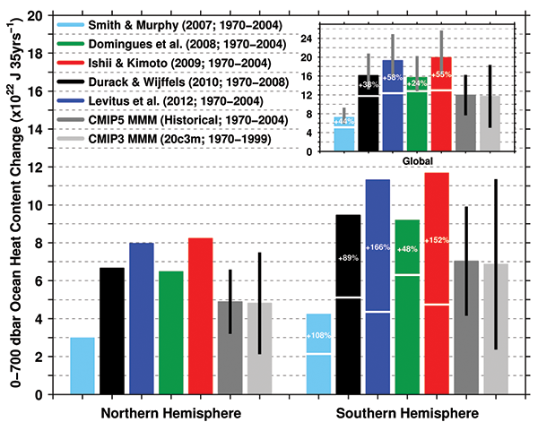
Figure 5. Observed and simulated hemispheric and global upper-ocean heat content change
for 1970 to 2004. A one standard deviation spread in simulated estimates is
given by the black lines. The Southern Hemisphere (SH) adjusted values (indicated
by the white lines across the lower right bars) are adjusted to match the multi-model
mean (MMM) hemispheric ratio. The Northern Hemisphere (NH) and adjusted SH
estimates are then summed to obtain global estimates (upper inset), and error bars
(grey lines) show the range of adjusted values obtained considering a one standard
deviation spread of model simulated ratios (see Figure 4 in the main text). Global
unadjusted values are also indicated by the white lines across the inset bars
(upper inset; Source: Paul Durack/LLNL)
- Clicking
HERE will download an archive containing a high-resolution *.tif and *.eps
file suitable for print
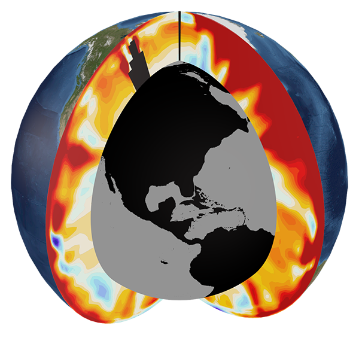
Figure M1. Pacific and Atlantic meridional sections showing upper-ocean warming
for the most recent complete decade (Source: Timo Bremer/LLNL) - Clicking
HERE will download a high-resolution *.tif file suitable for print.
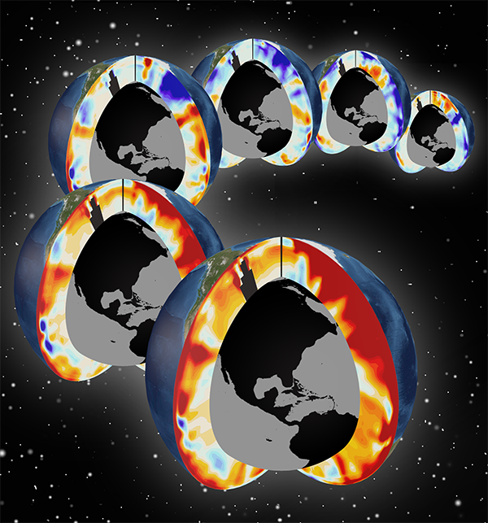
Figure M2. Pacific and Atlantic meridional sections showing upper-ocean warming
for the past 6 decades (1955-2011; Source: Timo Bremer/LLNL) - Clicking
HERE will download a high-resolution *.tif file suitable for print.
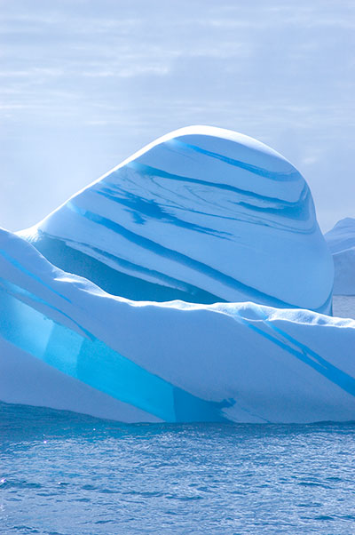
Photo 1. The Southern Ocean is a remote and beautiful place. Icebergs frequently
drift off the Antarctic coast and are beautiful to see during their various stages
of melting. This iceberg, sighted off the Amery Ice Shelf, also has bands of
translucent blue ice formed by sea or freshwater freezing in bands between layers
of more compressed and white glacial ice (Source: Andrew Meijers/BAS)
- Clicking
HERE will download a high-resolution *.tif file suitable for print.
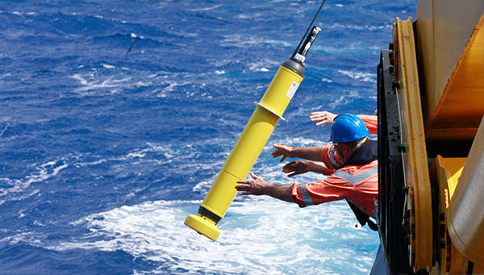
Photo 2. Akin to having a fleet of miniature research vessels, the global flotilla
of more than 3,600 robotic profiling floats provides crucial information on upper
layers of the world's ocean currents. (Source: Alicia Navidad/CSIRO) - Clicking
HERE
will download a high-resolution *.tif file suitable for print.
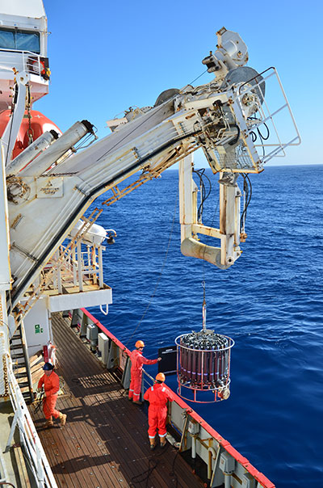
Photo 3. Lined with bottles triggered at different levels of the ocean, this
conductivity, temperature and depth profiler bearing a suite of sampling
bottles is a mainstay of oceanography. It can be deployed to depths of 6,000
metres to study changes in ocean temperature and salinity.
(Source: Andrew Meijers/BAS) - Clicking
HERE will download a high-resolution *.tif file suitable for print.
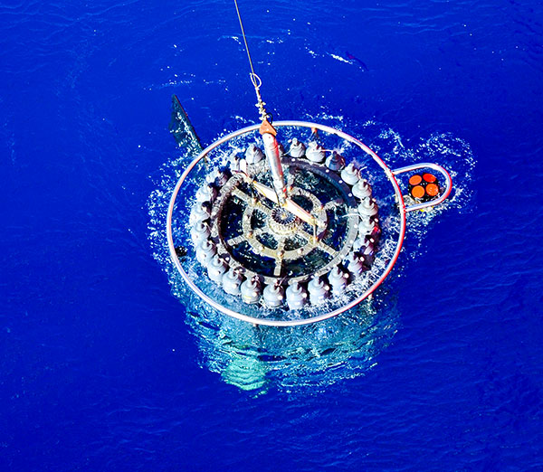
Photo 4. Lined with bottles triggered at different levels of the ocean, this
conductivity, temperature and depth profiler bearing a suite of sampling
bottles is a mainstay of oceanography. It can be deployed to depths of 6,000
metres to study changes in ocean temperature and salinity.
(Source: Andrew Meijers/BAS) - Clicking
HERE will download a high-resolution *.tif file suitable for print.
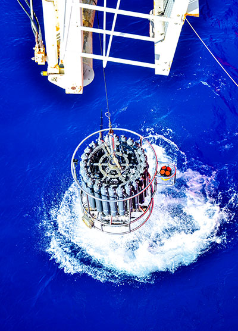
Photo 5. Lined with bottles triggered at different levels of the ocean, this
conductivity, temperature and depth profiler bearing a suite of sampling
bottles is a mainstay of oceanography. It can be deployed to depths of 6,000
metres to study changes in ocean temperature and salinity.
(Source: Andrew Meijers/BAS) - Clicking
HERE will download a high-resolution *.tif file suitable for print.
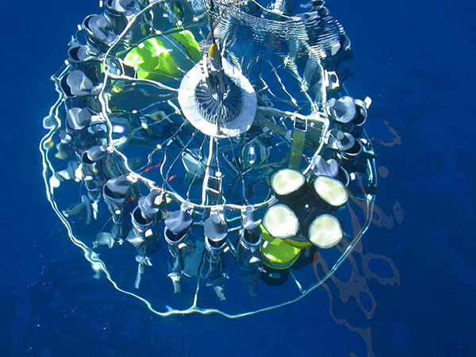
Photo 6. Lined with bottles triggered at different levels of
the ocean, this conductivity, temperature and depth profiler bearing a
suite of sampling bottles is a mainstay of oceanography. It can be
deployed to depths of 6,000 metres to study changes in ocean temperature
and salinity. (Source: Ann Thresher/CSIRO) - Clicking
HERE will download a high-resolution *.tif file suitable for print.
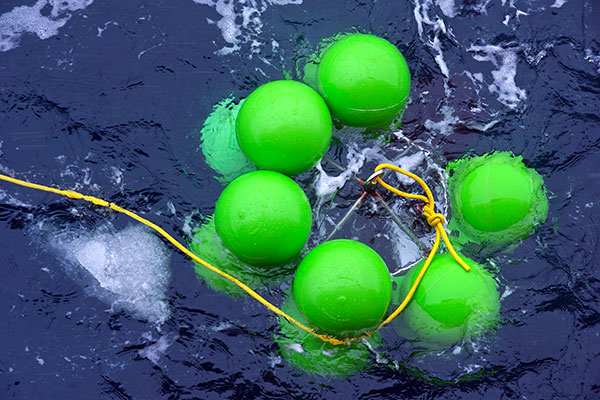
Photo 7. Monitoring of the Southern Ocean using arrays of
anchored and drifting instruments reveals warming and freshening of
deep waters around Antarctica. Some of the extra melting of ice around the edge of
Antarctica is flowing into the sea and getting carried down to the deep
ocean by ocean currents. (Source: Steve Rintoul/CSIRO) - Clicking
HERE will download a high-resolution *.tif file suitable for print.
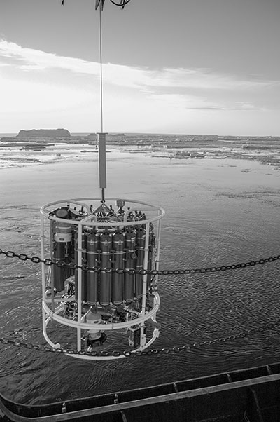
Photo 8. Lined with bottles triggered at different levels of the ocean, this conductivity,
temperature and depth profiler bearing a suite of sampling bottles is a mainstay of
oceanography. It can be deployed to depths of 6,000 metres to study changes in ocean
temperature and salinity. (Source: Andrew Meijers/BAS)
- Clicking HERE
will download a high-resolution *.tif file suitable for print.
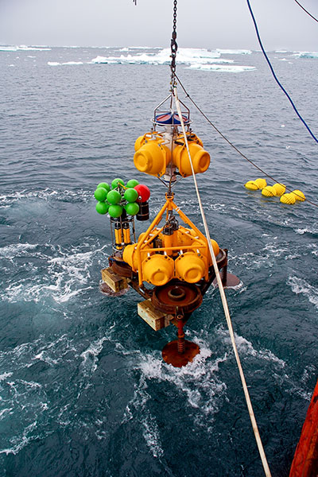
Photo 9. Monitoring of the Southern Ocean using arrays of anchored and drifting
instruments reveals freshening of deep waters around Antarctica. Some of the
extra melting of ice around the edge of Antarctica is flowing into the sea
and getting carried down to the deep ocean by ocean currents. (Source: Steve
Rintoul/CSIRO)
- Clicking HERE
will download a high-resolution *.tif file suitable for print.